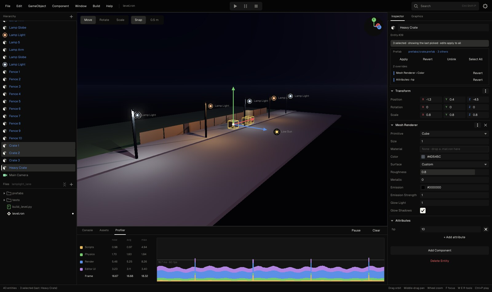

Editor workflow
Tools for building a level quickly: edit many objects at once, place them on a grid, lay out copies in a row, and see where each frame's time goes.

Selecting several objects#
| Hierarchy | Scene view | |
|---|---|---|
| Add or remove one | Ctrl+click | Ctrl+click (or Shift+click) |
| Select a run | Shift+click: from the last picked to the clicked row | |
| Select by area | Shift+drag (or Ctrl+drag) on empty space: everything whose centre is inside the box | |
| Select everything | Ctrl+A (or Edit ▸ Select All) | Ctrl+A |
| Clear | Esc, or click empty space | Esc, or click empty space |
The object picked last is the lead. The Inspector shows its values, with a "3 selected" note above them, and the Move / Rotate / Scale gizmo sits on it. Its Hierarchy row has a mark on the left, and its box in the Scene view is the brightest.
Edits apply to all of them. Type a value, tick a box, pick a colour, add or remove a component, paste component values, or set an attribute, and every selected object gets the same change. Each edit is a single undo step, however many objects it touched. Other commands work on the whole selection too:
- Gizmo drags move, turn or scale the group around the lead, keeping the objects' layout.
- Arrow keys / PgUp / PgDn nudge every selected object.
- Ctrl+D duplicates them all and selects the copies.
- Ctrl+C / Ctrl+V copy and paste them all.
- Del deletes them all.
Right-clicking a selected Hierarchy row keeps the selection, so the context menu's commands apply to all of it.
Snapping#
The Snap button next to Move / Rotate / Scale in the Scene view turns snapping on. While you drag a gizmo handle:
| Tool | Snaps to | Steps (click the step button to cycle, Shift+click to go back) |
|---|---|---|
| Move | the world grid on the dragged axis | 0.1, 0.25, 0.5, 1, 2, 5 m |
| Rotate | whole turns of the step since the drag began | 5, 15, 30, 45, 90° |
| Scale | whole steps on the dragged axis | 0.05, 0.1, 0.25, 0.5 |
Hold Ctrl during a drag to do the opposite for that drag: snap with Snap off, or move freely with it on. Snap and its steps are saved with your preferences. Edit ▸ Snap toggles it too.
Duplicate Along a Line#
Edit ▸ Duplicate Along… (Ctrl+Shift+D, or right-click an object) copies the selected object several times in a row: fence panels, columns, street lamps, a staircase.
| Setting | |
|---|---|
| Copies | How many (up to 500). |
| Offset X / Y / Z | The step from one copy to the next, in metres. It starts at the object's own width plus half a metre, along X. |
| Turn | How far each copy turns about Y from the previous one, in degrees. Use it for a spiral staircase or a ring of pillars. |
− and + change a value; hold Shift for bigger steps. The summary line shows how far the row will reach. Duplicate (or Enter) makes the copies as one undo step and selects the whole row (the original too), ready to be moved as one. Copies of a prefab instance stay linked to the prefab.
Profiler#
Window ▸ Profiler (or the Profiler tab of the bottom dock) graphs the last 240 frames:
| Series | What it measures |
|---|---|
| Scripts | Time your Python behaviour scripts took in their last frame (measured by the script runner; Play mode only). |
| Physics | Stepping physics, character movement and animation (Play mode only). |
| Render | Drawing the scene and the camera preview, and presenting the frame. Presenting waits for the display when V-Sync is on, so this bar is tall even when the scene is cheap. |
| Editor UI | Drawing Oberon's own panels, the material preview, and applying edits. |
| Frame | The whole frame, start to start. This includes waiting for the display, so with V-Sync it sits at the refresh interval. |
The table shows each series' latest, average and worst value in milliseconds. The graph stacks the four parts for each frame, with a faint mark at the whole frame's length, against 16.7 ms (60 fps) and 33.3 ms (30 fps) guide lines. Hover a bar to read that frame's figures. Pause holds the graph still; Clear starts it over.
The Inside the frame column (on wide windows) splits the frame into finer slices, busiest first, with average and worst times: each editor panel (Inspector, Hierarchy, Files, bottom dock, scene view overlays, script editor), the scene render, presenting, the script runner, asset watching, the language server and saving preferences. Copy puts every figure, including the slices that don't fit, on the clipboard as plain text, ready to paste into a bug report about a slow editor.
A tall Scripts bar points at an expensive update. A tall Physics bar
points at too many bodies or colliders. A Render bar that grows with the
scene points at too many objects or shadows: try a lower graphics preset
(Graphics ▸ Quality) and compare.
See also#
- Prefabs & attributes: linked prefab instances, overrides and variants.
- Keyboard shortcuts.
examples/oberon/lamplight_lane/: a street built from prefabs, with its fence laid out along a line.